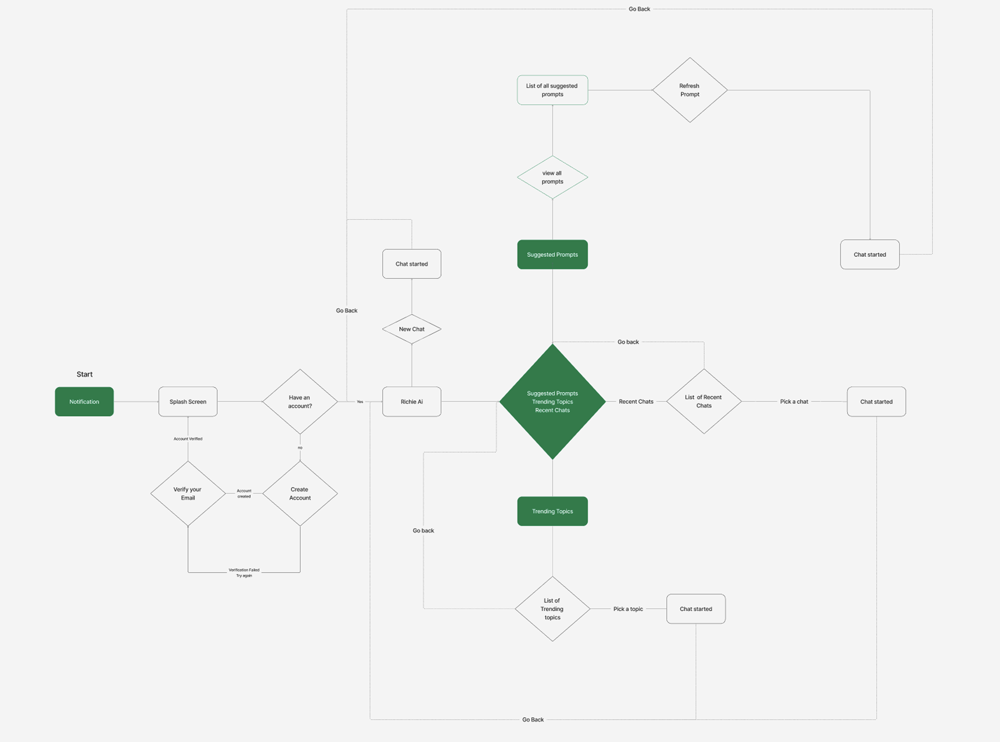
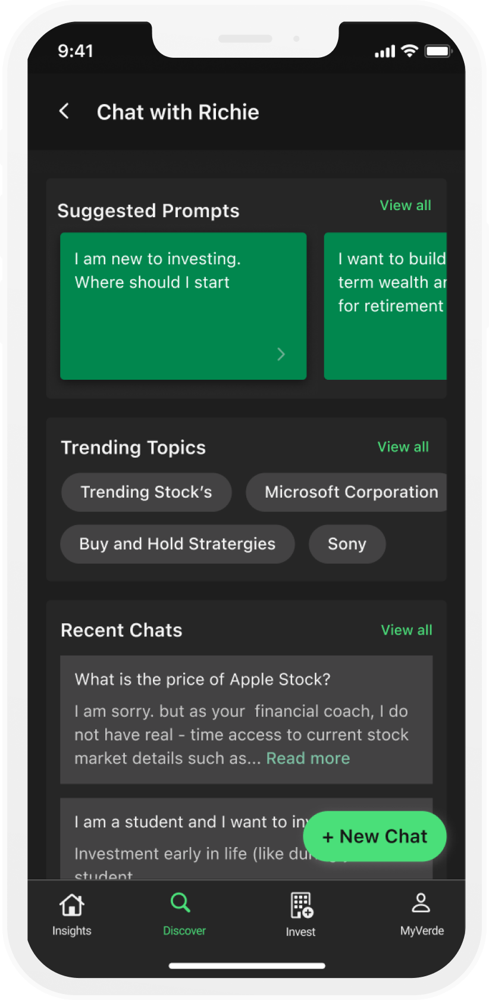
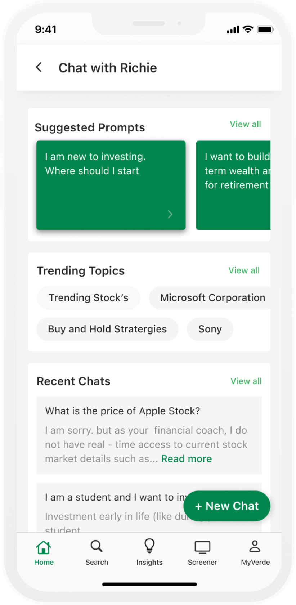
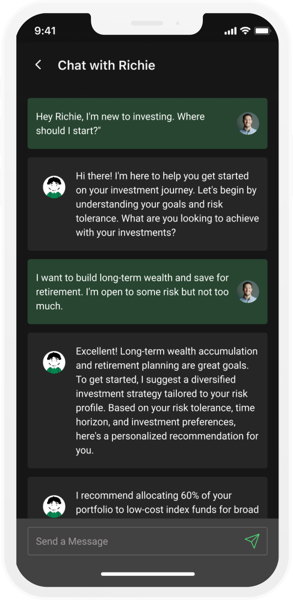
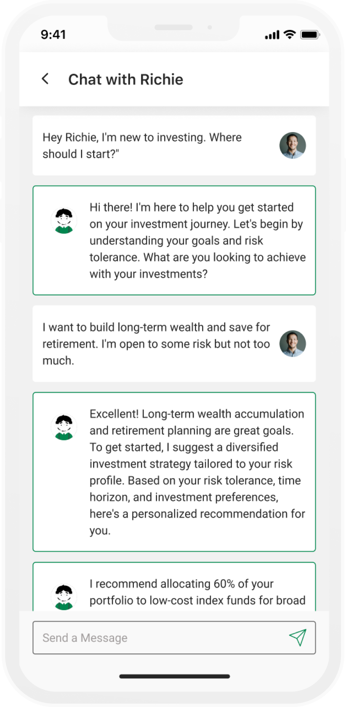
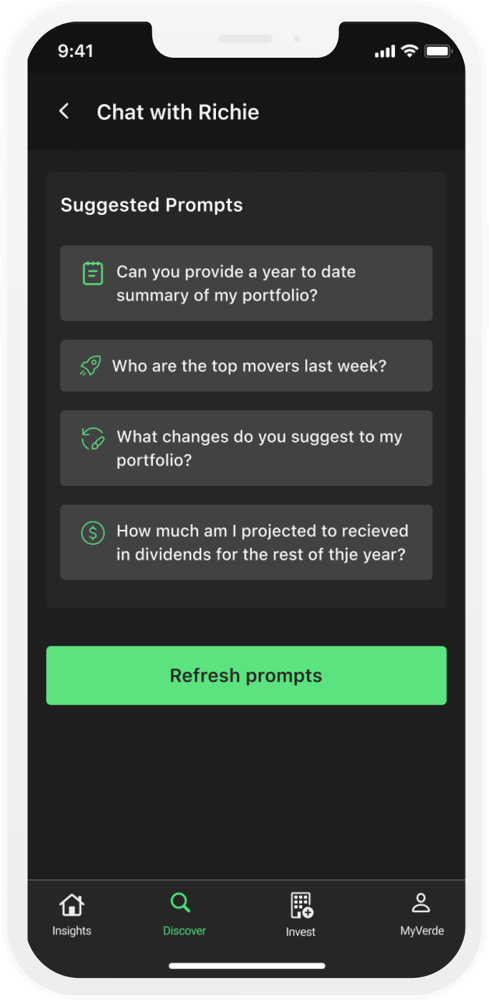
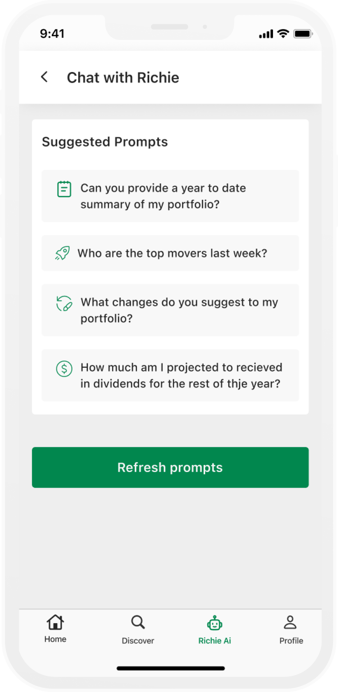
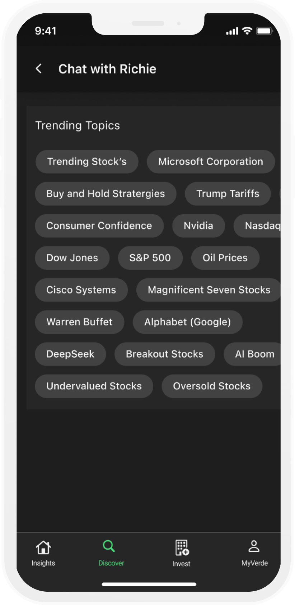
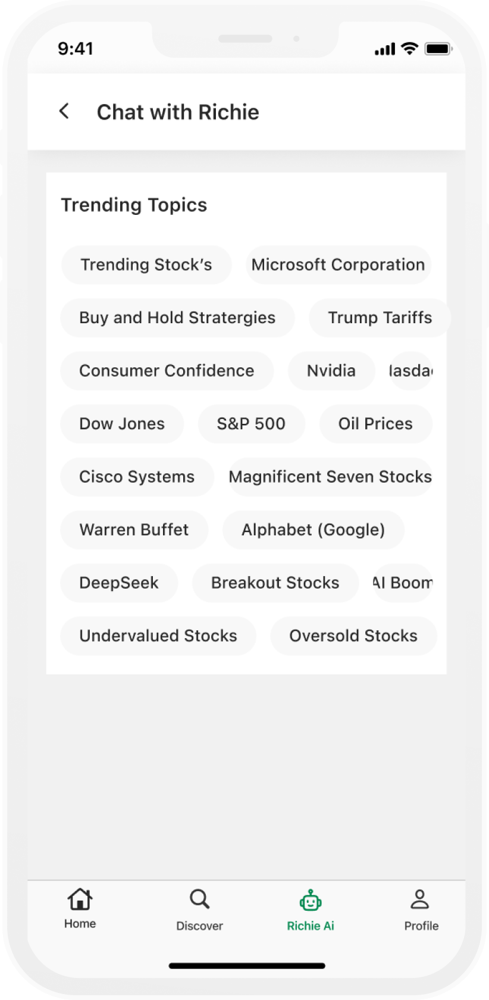

Designing a trusted
AI companion.
A personalised AI investment companion that makes financial decision-making feel intuitive, proactive, and human — built for Verde Finance.
Investing is intimidating.
Richie AI makes it personal.
Most Fintech apps overwhelm users with data. Richie AI needed to do the opposite — surface the right insight at the right moment, in language that feels personal rather than algorithmic.
The research finding that
changed everything.
My quantitative data showed the what, but it didn't explain the why. After eight user interviews, a clear pattern emerged: Users didn't distrust the AI—they distrusted themselves.
Every design decision after that moment was filtered through one question: Does this build trust, or erode it?
From user insight to execution.
Four phases. No skipping steps.
Mapping the system before
designing the screens.
Before any screen was designed, the full app flow was mapped — every entry point, every decision, every dead end. The key discovery: Richie Chat needed to be reachable from anywhere in the app, not siloed as a tab.

Key flow decision — Richie Chat is accessible from a persistent bottom bar on every screen. Users don't navigate to it — it's always there. This was a deliberate choice to reduce the friction between having a question and asking it.
Three findings.
One clear direction.
Insights drawn from analytics data, session recordings, and user interviews across varying levels of investment experience.
Three users.
Three relationships with money.
Every design decision was filtered through these three archetypes — real patterns drawn from our interview sessions and usage data.
Stop showing users everything.
Let them ask instead.
The core insight from research was simple but uncomfortable: traditional stock dashboards show users everything about a stock — price, volume, P/E ratio, 52-week range — all at once. For most users, that's not information. That's paralysis.
The answer wasn't to simplify the data — it was to change the interaction model entirely. Instead of presenting everything and hoping the user finds what matters, Richie Chat lets users ask exactly what's on their mind and get a direct, conversational answer.
Dashboard dumps everything
Open a stock. See 20 data points. Feel overwhelmed. Close the app. Repeat. The information was technically accurate but emotionally useless — users couldn't locate what they actually needed to make a decision.
More data, less confidence.
Conversation surfaces what matters
User types "Is Apple a good buy right now?" Richie responds with a 3-sentence answer tailored to their risk profile and portfolio — with the option to go deeper. The full data is still there. It just doesn't lead anymore.
One question. One answer. One decision.
Building the visual language
for Richie Chat.
Every component was designed around one principle: the interface should feel like a knowledgeable friend, not a financial terminal.
The decisions behind
the screens.
I didn't start with the chat interface. I started with the question: at what moment does a user actually need information about a stock? Not when the app opens — when they have a specific thought. "Should I sell?" "Is this dip temporary?" "What happened today?" That's a question-shaped moment, not a dashboard-shaped moment.
What broke.
What we fixed.
From wireframe to final design.
Every screen went through at least 3 iterations. Getting the flow right before the pixels.








Replace these wireframe placeholders with final Figma exports — modified for NDA as needed. The layout and labels are already structured to match your screen titles.
Designed for trust.
Measured by retention.
Within the internship period, redesigned flows were shipped to production. Early metrics from A/B testing showed meaningful movement across all three target areas.